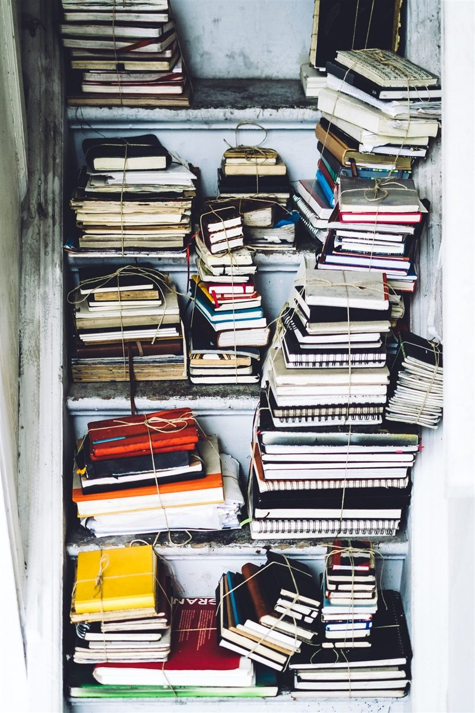
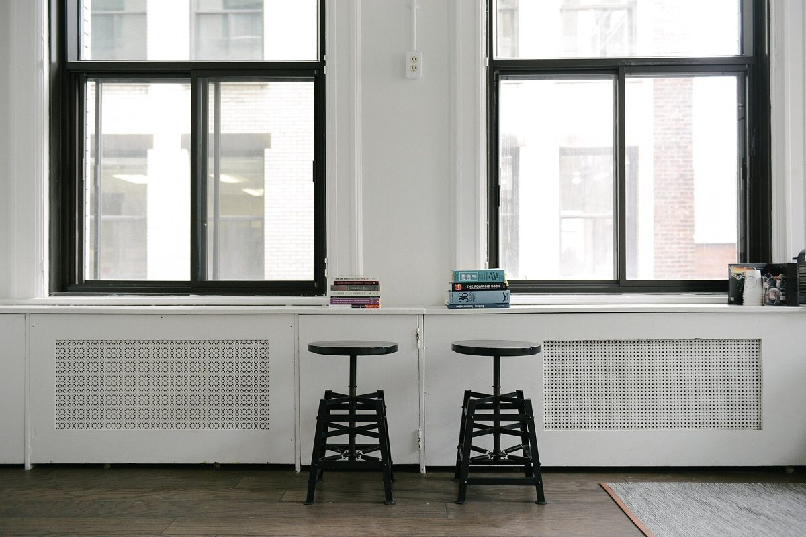

貸出カード、
借りる人の欄は空欄。
借りる人の欄は空欄。
制作側の連想
屋号から思い浮かべた「貸出カード」
屋号に「ブックカフェ」「自分を見つける」とあることから、制作側は、本の見返しに貼られた貸出カードを連想しました。借りた人の名前と返却期限が一行ずつ並び、日付印が押されていく、あの細長いカードです。このサイトは各ページをその一行に見立て、名前欄はあなたのための空欄にしてあります。
これは制作側の連想で、お店の理念・屋号の由来とは無関係です。お店の実際の品揃えや設備を表すものでもありません。
LOAN CARD
このサイトの貸出カード
- 印 01店のこと確認できていること、想像のこと返却期限: ――
- 印 02メニュー準備中返却期限: ――
- 印 03口コミ創作のイメージ例です返却期限: ――
- 印 04アクセス所在地と地図返却期限: ――
- 印 05借りた人: あなた空欄のまま。Instagramで最新情報を
PHOTO SLIPS
差し込まれた、五枚の栞代わり。
写真はこの町やお店のものではありません。国外・撮影地不明のフリー素材のイメージです。
SLIP 1
撮影地不明のイメージ 
SLIP 2
撮影地不明のイメージ 
SLIP 3
撮影地不明のイメージ 
SLIP 4
撮影地不明のイメージ 
SLIP 5
撮影地不明のイメージ
INFO
お店のこと(確認できたものだけ)
| 所在地 | 〒441-3413 愛知県田原市六連町番場19 |
|---|---|
| 電話 | なし |
| 営業時間 | 準備中 |
| 定休日 | 準備中 |
| ご予約 | 準備中 |
| 駐車場 | 準備中 |
| SNS | Instagram @jibun_wo_mitukeru_bookcafe |